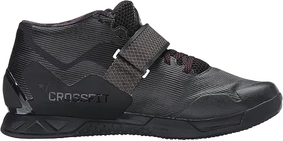
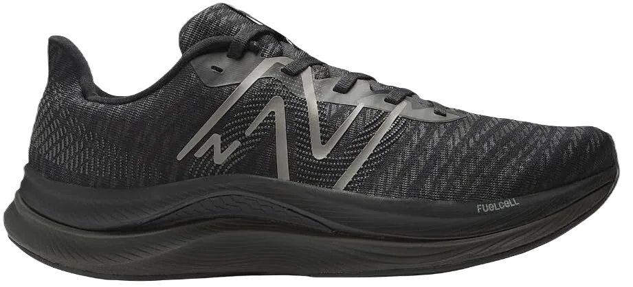

Top 5 Best All Around Workout Shoes 2024
The Best All-Around Workout Shoes, or gym shoes, provide enhanced grip and support, enabling you to work out safely and effectively without heavily relying on home exercise equipment. Whether you're lifting heavy weights or powering through an intense HIIT session, having the right gym shoes is essential for proper stability and comfort during your workouts.
As a fitness enthusiast, I can personally attest to the risks of using improper footwear. In fact, I nearly suffered a serious knee injury when my worn-out running shoes caused my heel to drop unexpectedly. This experience highlighted the importance of having well-fitted, supportive gym shoes, especially for individuals who are overweight or prone to joint issues.
-
#1
NIKE unfastened X METCON 2
.webp)
Support, flexibility, a stable platform, and solid connection with the ground—these are the key qualities of an excellent fitness trainer, and the Nike Free X Metcon 2 delivers all of them in abundance.
Nike's line of training shoes, particularly the Metcon series, is designed to accommodate a wide variety of exercises. The flexibility of these shoes allows for seamless transitions between different workout routines without the need to switch footwear. This versatility makes them an excellent choice for those looking to tackle a wide range of fitness activities.
The upper part of the shoe, made with TPU material, promotes airflow to keep your feet cool, ideal for individuals pushing themselves in high-intensity workouts. Additionally, the bootie construction provides enhanced ankle support, making these shoes perfect for quick movements, lateral steps, and sprint training, ensuring stability and comfort throughout. -
#2
NIKE METCON 6
.webp)
It's important to highlight that the latest iteration of the Metcon shoe has moved away from the neoprene-like ankle support that many enthusiasts once cherished. Despite this change, it maintains a notably flat sole, which is perfect for facilitating dynamic mobility during workouts. This flat platform ensures that athletes can execute a wide range of movements with confidence and stability, whether they are performing squats, deadlifts, or high-intensity interval training.
One of the standout features of the Metcon is the robust foam cushioning located beneath the heel, which serves as a supportive base for the foot. This design is particularly beneficial for absorbing impact during high-energy movements, reducing stress on the joints and enhancing overall comfort. According to the manufacturers, this latest version offers 18% more breathability than its predecessor, the Metcon 5. This improvement is attributed to a sophisticated heavy-duty mesh construction that allows for increased airflow, helping to keep your feet cool and comfortable even during the most intense workouts.
Another notable enhancement is the inclusion of a removable Hyperlift insert, which allows users to easily adjust the height beneath their heel. This versatile feature enables you to tailor the shoe's performance characteristics to suit your workout needs—whether you're lifting weights or engaging in varied training sessions. By simply switching out the insert, you can transition these adaptable shoes from an optimal lifting position to a more flexible training configuration in seconds. This adaptability makes the Metcon an exceptional choice for athletes seeking to enhance their performance across a wide array of fitness activities, ensuring they have the support and flexibility they need to reach their goals. -
#3
CrossFit wannabe discrimination
CrossFit encompasses a wide variety of athletic disciplines, requiring a versatile shoe that ensures enthusiasts can perform effectively without discomfort. As the sport continues to evolve, having a multi-functional shoe is essential for preventing fatigue and injury during intense workouts.
Reebok has fully embraced CrossFit (which many practitioners proudly consider a sport) with its Nano footwear line, which boasts several innovative features in a sleek, lightweight design. This includes an advanced heel structure that works in conjunction with a molded midsole and a supportive sock liner, providing exceptional ankle stability during heavy lifting sessions.
The shoe features Reebok’s “Toe-Tection” technology, which enhances durability in the front part of the shoe—an area where many users experience wear over time. Additionally, a large rubber outsole ensures stability while lifting, and the forefoot flex grooves enhance flexibility, allowing for improved balance during dynamic movements like squats and lunges. This combination of features makes Reebok’s Nano shoes an excellent choice for anyone serious about their CrossFit training. -
#4
ADIDAS ADIPOWER
.webp)
There’s a common misconception that anyone can lift heavy objects without proper support, but just as you wouldn’t step onto a football field wearing tennis shoes, it’s equally important to use the right footwear when approaching a squat rack.
The Adidas Heavyweight shoe features a significant drop from heel to toe, along with a torsion bar system at the back, which provides a more stable platform for effectively managing heavy loads. This design allows athletes to apply crucial force during their lifts without compromising stability.
Additionally, a single instep strap offers extra support for the feet and can be quickly and easily adjusted during setup, ensuring that nothing interferes with your performance during repeated attempts. However, it's worth noting that while these shoes excel at heavy lifting, they may not be suitable for other activities. If you plan to hop on a treadmill during your workout, it's advisable to pack a pair of dedicated running shoes in your gym bag to avoid looking out of place. -
#5
NEW BOTTLE storage BOTTLE
New Balance is a leading contender in the walking shoe market, but it has also made strides in the fitness arena. The Fresh Foam Roav stands out as one of the most stylish options on the list, featuring design elements that make it a great companion for gym workouts.
The Fresh Foam technology provides a light, airy feel during use, while the Ultra Heel design ensures that the heel stays securely in place, whether you’re lifting weights or powering through a cardio session. Unlike many other New Balance shoes, this model abandons the traditional ‘banana’ shape in favor of a flat platform, allowing for better foot placement and stability during squats and other demanding exercises.
However, some may find that there isn’t quite enough foam cushioning to their liking, as it can lead to a more direct connection with the ground that may cause slight ankle rolls if you’re not careful. Nonetheless, this shoe offers an appealing aesthetic while being functional for individuals engaged in both strength training and aerobic fitness.